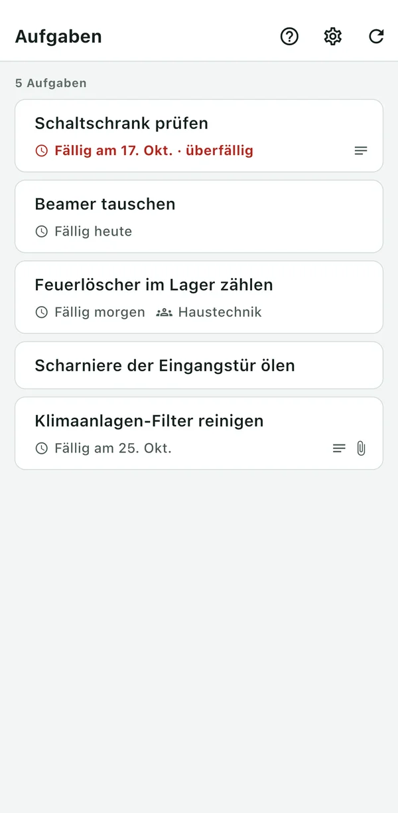
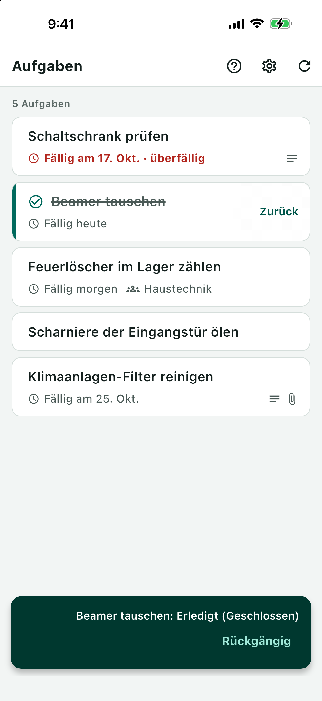
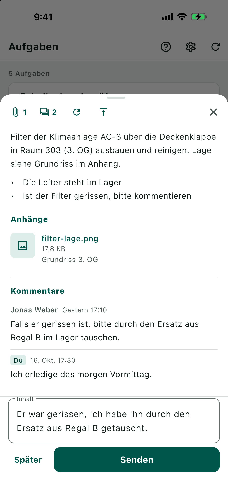

Zugewiesene Aufgaben ansehen.
Sehen Sie offene Aufgaben, die Ihnen oder Ihrer Gruppe zugewiesen sind. Öffnen Sie eine Aufgabe, um die Beschreibung zu lesen und angehängte Bilder anzusehen.

Warten Ihre Redmine-Updates, bis Sie wieder am Computer sind? Mit BeatMine aktualisieren Sie Redmine direkt nach der Arbeit vom Smartphone aus. Teilen Sie den Fortschritt mit Ihrem Team und bringen Sie das Projekt voran.
Kostenlos nutzbar
Für iPhone · Ab iOS 15

Für Redmine 6.0 / 6.1 / 7.0 · Verbindungsvoraussetzungen
Wenn Sie Redmine sonst erst zurück am Computer aktualisieren, erledigen Sie es direkt vor Ort. BeatMine speichert Abschlüsse und Kommentare in Ihrem bestehenden Redmine. Ihr Team findet sie dort wie gewohnt.
Details prüfen.
Dann die Aufgabe direkt vor Ort aktualisieren.
Sehen Sie offene Aufgaben, die Ihnen oder Ihrer Gruppe zugewiesen sind. Öffnen Sie eine Aufgabe, um die Beschreibung zu lesen und angehängte Bilder anzusehen.

Wischen Sie die Aufgabe nach rechts, sobald die Arbeit erledigt ist. Auf dem Bildschirm sehen Sie, ob die Aktualisierung Redmine erreicht hat.
Halten Sie einen Teiletausch fest oder hinterlassen Sie Hinweise für die nächste Person. Ihr Kommentar wird im Verlauf der Aufgabe in Redmine gespeichert.
Aufgabeninformationen werden direkt zwischen Ihrem iPhone und Ihrem Redmine übertragen. Wir erheben keine Aufgabendaten. Ihr API-Schlüssel wird im sicheren Speicher Ihres Geräts aufbewahrt.
Datenschutzerklärung →Verbinden Sie sich mit dem Redmine, das Ihr Team bereits nutzt. Fragen Sie Ihre Redmine-Administration, wenn Sie nicht wissen, ob die REST-API aktiviert ist.
Je nach Redmine-Einstellungen können die Verbindung oder einzelne Funktionen eingeschränkt sein.
Verbindungsvoraussetzungen und Einschränkungen →Kostenlos nutzbar
Für iPhone · Ab iOS 15
